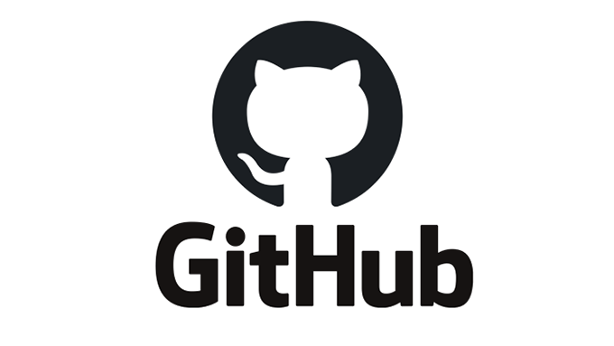
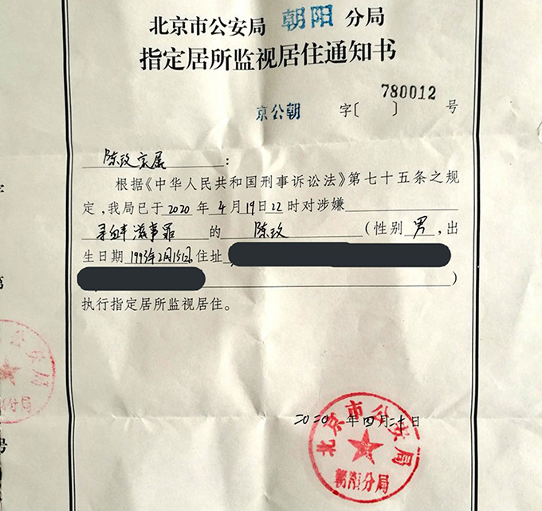

“端点星”倒下了，他们站起来了 — rfa|自由亚洲电台
Table of Contents
遭到逮捕的北京网站“端点星”志愿者陈玫（左）与蔡伟（脸书截图）
上周，致力于备份中国网站上被删文章的“端点星”志愿者被正式逮捕。“端点星”的名字取材于科幻小说，位于银河螺旋臂的最前缘， 是伴随该处一颗孤独恒星的唯一行星。但是，现实中的它并不孤单，一颗端点星滑落了，却还有一批同道者,前赴后继, 对抗黑暗。受其启发而创办duty machine网站的Nick Chen写道，“只是世界上有一些我们必须去保存的‘不正确'的记忆。我们必须要为记忆而奋斗。”为什么保存记忆这么重要？请听自由亚洲电台记者薛小山对 Nick 的访谈：
中国当局害怕民间“备份”记忆、记录历史
薛小山 ：端点星这个项目有什么样的意义？它给予你什么启发？
Nick Chen: 它应该是第一个公开备份被审查信息、做的比较大的项目。它的意义是在于志愿者被抓之后，传递了这样一个信息：当局对“备份”工作是非常忌惮、有所干涉的。
薛小山 ：你的网站duty machine是如何运作的？
Nick Chen: 一个墙内平台的作者如果写文章发布到微信，可以在我们这里备份，获取一个可以永久访问的链接，推广文章的时候可以附带这个链接。如果微信文章删除，这个链接还可以访问。
一个墙外平台的作者，比如Matters, 可以通过这个网站生成一个墙内平台可以访问的链接。
薛小山 ：中国当局是怎么定位到陈玫他们的真实身份？你如何保障duty machine网站的安全性和隐秘性？
Nick Chen: 因为他们前期有一些疏漏。端点星Github的ID是Terminus2049, 是由早期“Psai1993”这个ID改过去的，可能蔡伟当时没有保护得那么严谨。有网友做过分析。每一个提交记录要求有一个ID和email。 15年提交的，19年是不能改的，这是开源软件的惯例。如果当时不小心，现在可能会遇到危险。
我的匿名性，就是自己注意在提交时不泄露个人信息。而公众访问我们的网址，可能泄露的是他的ID。我们提交入口的代码是放在另外一个美国的服务商托管的，他们运行的时候会公示这个代码。就是我可以证明，我的代码没有去获取、保留你的IP。
实际上，公众还有一个小风险，当局可能知道他访问过我们的网址，但是至于哪个东西是谁提交的，这是不知道的。他们没有办法取证到具体是哪个IP发布哪个内容。如果可以开一些翻墙工具再提交，是最好的。

Figure 1: 总部位于美国加州的软件源代码托管服务平台Github标志（Public Domain）
Github平台，对抗中国审查的高地
薛小山 ：Github是总部位于加州的软件源代码托管服务平台,它在对抗中国审查中扮演什么角色？
Nick Chen ：一般文章在中国是非常容易被审查的，中国是可以把google.com这个域名切断的。但是有一个在开源软件行业使用广泛的网站github, 可以存放、分享内容。当局如果屏蔽github，会对中国程序员产生很大影响，迫使很多人翻墙。端点星计划自己的域名被墙了，但是文章还是可以通过 github访问到，验证了这种可能。
Github是对抗审查的工具。我就尽量利用github分享文章，可能有一天会被墙。我这个主意是受香港抗争的“揽炒”的启发，就是你去做一件好的事情一定会承担代价成本。不能说你享受了 自由世界的软件福利，但是你不对自由世界负起责任。
薛小山 ：中国不可以屏蔽、删除Github的文章吗？
Nick Chen ：Github是一个美国公司，中国没有权限要求其删除文章。历史上有过这样的请求，但是只有一篇文章被删了。当局如果要求Github下架，必 须频繁地发外交辞令。另外，中国基本上只能把整个域名屏蔽，但是不能针对某个路径屏蔽，这个是由https技术决定的。
中国可以屏蔽美国Github的域名，但是会对国内软件业产生伤害，太多软件业利用这个平台做开发，程序员没有办法获取世界上的资料、项目，这对中国是一个“鱼与熊掌”的问题。
薛小山 ：可以说Github平台是对抗中国审查的最后高地吗？由端点星开的先河？
Nick Chen: 对，我认为是这样。

Figure 2: 端点星的志愿者陈玫因涉嫌寻衅滋事，近两个月来一直被指定居所监视居住。（脸书截图）
端点星，不孤单
薛小山 ：蔡伟和陈玫生于1993年，分别毕业于清华和华南农业大学，都是立人大学前学员。我们试图采访其友人，但是可以站出来说话的少之又少。他们是现代中国年轻人中的“异端”吗？同辈们会如何看待他们做的事？
Nick Chen: 确实是异端。大部分人是不理解的，他们接受的信息和教育是比较扭曲的。以前我会转一些时评、西方政治科学的文章到朋友圈，久而久之就不做了，因为没有人看。他们觉得中国是一个很特例的存在，西方的东西不适用，对之嗤之以鼻。
中国教育里没有“political science（政治学）”的学科，大部分中国学生对政治这个词语的理解可能来自高中课本，灌输一种概念：中国崛起会被世界打压；政治和官员派系斗争联系 在一起。所以他们本身对政治这个词很排斥。但是西方的观点来看，政治其实是每个公民都要参与的事情。高中课本经常把中国描述成受害者，描述得越多，他们可 能就越倾向于民族主义和极端的爱国主义。
薛小山 ：你也和蔡伟他们一样是九零后吗？
Nick Chen: 对。我当时很想去参与“立人大学”， 12年左右。他们在推动中国社会变革的活动，当时可以在报纸上宣传，但是14年被关停。
假 如你出生在90年，大概就会受到韩寒这些人的影响。2013年前看南方系的媒体比较多，都可以知道公民意识。13年其实就是主席上台。2014年之前，大 陆是可以访问谷歌的，我记得以前用“春夏之交的政治风波”访问维基，还是可以看到词条。13、14年其实是一个分水岭。
我们经历过两个阶段，能看到言论环境的退化。现在的“零零后”，可能从来没有上过谷歌。14年到2000年有六年，如果从初一到高三，完全没有接触外网，你的观念很难再改变。
薛小山 ：端点星似乎也在一些年轻人心中激起涟漪和反思。有微博网友给朝阳区看守所寄信问候陈玫， “感谢你为了保存一份记忆所做的努力。相比于你来说，我是一个懦弱的人，只懂得逃跑。”
Nick Chen: 肯定会有人被触动的，但是他们的声音可能很快被封杀，所以我们也无从知道在人群中的比例究竟有多少。
薛小山 ：中国外交部发言人华春莹宣称抗疫叙事“应留下正确的人类集体记忆”。对你来说，为什么留下“不正确”的记忆这么重要？
Nick Chen: 她觉得是就是吧，我们只是认为她必须尊重宪法里提及的公民自由。激发我做这个事情的原因、我会想出来做些宣传，最主要还是因为“端点星”。让人很气愤，你可以想象他们在看守所的待遇，就是你没有办法用道理为自己辩护，是非常非常难过的。我可以感同身受，但是我又没办法为他们做什么，就像《发哨子的人》中艾芬说的，“早知道有今天，我管他批评不批评，老子要到处说”，因为看到疫情受伤者太不忍心了。
“寻衅滋事”最多可以判七年，我不希望他过了很多年之后出来，很后悔当时做了“端点星”。如果我可以让他们觉得有一点安慰，就是告诉他们，他们不孤独。
我受到最大的冲击，就是他们不允许家属聘请律师，这是不讲理到极致。我不能忍受，就算你要打压我，这也是我不能逃避的duty（职责）。
薛小山 ：这就是你的网站为什么叫“duty machine”?
Nick Chen ：有一个存档的网站叫“wayback machine”。Duty 的话，因为“六四”事件里，记者问一个学生为什么要去天安门游行，他说“I think, this is my duty（我认为这是我的责任）”。他给了我很多力量。
薛小山 ：你会觉得你们和六四广场上的学生都是一体的吗？
Nick Chen: 我会这样去想象吧。就是去单纯追逐一个自己心目中，一个正直的人应该做的事情。六四事件很难评价，但是总结起来，就是善意、正直，还有勇气。
记者注：
- 技术分析贴: 蔡伟的身份如何被发现
- 其它致力于对抗404并声援端点星的民间项目：
- 时代透镜：“时代透镜与端点星互相独立。呼吁当局立即释放蔡伟、小唐、陈玫三人。”
“本项目旨在帮助公众更好的认识大中华地区的现在和历史。我们欢迎和鼓励公众参与提交新闻事件。” - Lest we forget ：“是记忆让我们免于再次踏入同一个灾难里面。而很多人选择了遗忘-–—以便过好日子。”
“我对陈玫、蔡伟及其女友等三人进行声援，并敦促当局：
- 立即无条件释放陈玫等三人，除非当局有充分可靠且可采纳的证据，证明他犯了国际公认的罪行，并须根据国际标准对他进行公正审判；
- 在陈玫获释前，确保他能够定期且不受限制地联系家人及他所选择的律师，并且不会受到酷刑和其他形式的虐待。
- 立即无条件释放陈玫等三人，除非当局有充分可靠且可采纳的证据，证明他犯了国际公认的罪行，并须根据国际标准对他进行公正审判；
引自 国际特赦组织声明
每个人都有免于恐惧的自由！”
记者：薛小山 责编：申铧 网编：洪伟